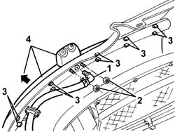
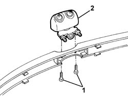
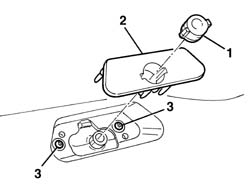
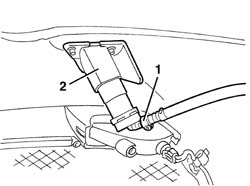

5050D10 headlamp washer jet/s - r+r with bumpers removed
- Path
- Procedures > 50 AUXILIARY UNITS > 5050 SCREEN WASHERS AND HEADLAMP WASH/WIPE > 5050D headlamp wash/wipe > 5050D10 headlamp washer jet/s - r+r with bumpers removed
- Kind
- repair procedure (removal / refitting; the operation number is the code)
- Applies to
- all engines; all production periods
- Interactive page
- https://sloeber94.github.io/elrnDB-a147/en/#/3025474
Applies to: all engines; all production periods
 Removing
Removing
 Refitting
Refitting1. Withdraw the pipe quick-release fitting by pulling it.
2. Unscrew the nuts.
3. Release all the moulding's retainers.
4. Remove the moulding with headlamp washer jet.

Applies to: all engines; all production periods
1. Undo the bolts.
2. Remove the headlamp washer jet from the moulding.

Applies to: all engines; all production periods
Refitting
RemovingCheck that the headlamp washer jet is not damaged.
Fit the headlamp washer jet and fix it with the bolts.
Fit the moulding with headlamp washer jet on the bumper and engage the retainers.
Tighten the nuts.
Engage the pipe quick-release fitting in the headlamp washer jet.
Applies to: all engines; all production periods; only with equipment: GTA
Removing
Refitting1. Release the retainer.
2. Remove the cover.
3. Undo the bolts.

Applies to: all engines; all production periods; only with equipment: GTA
1. Release the rapid connector for the flexible pipe.
2. Remove the headlamp washer jet.

Applies to: all engines; all production periods; only with equipment: GTA
Refitting
RemovingCheck that the headlamp washer jet is not damaged.
Position the headlamp washer jet.
Engage the rapid connector for the flexible pipe.
Tighten the bolts.
Position the cover.